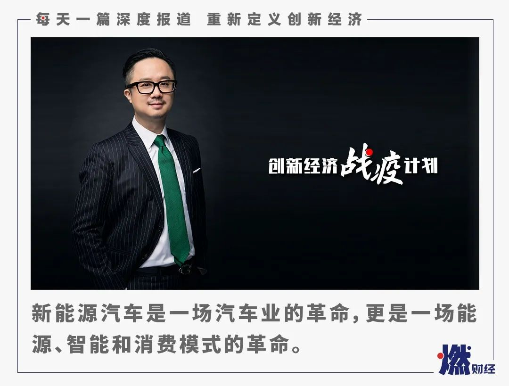

威马汽车沈晖：新造车企业只有三家能生存，威马、蔚来和小鹏
原文链接 备份链接 燃财经（ID:rancaijing）原创 作者 | 赵磊 编辑 | 周昶帆 突如其来的疫情对汽车行业造成剧烈冲击，业内机构盖世汽车的最新调研显示，有76%的受访者表示，在目前的情况下会调整购车计划，取消或延期。而对于本 …

燃财经（ID:rancaijing）原创
作者 | 孔明明
编辑 | 周昶帆
过去几年，有上百家新能源汽车企业成立，平均每家背后都站着数十位投资人，融资的速度和金额达到顶峰，每个人都在梦想找到“中国的特斯拉”。
而车市低迷、补贴退潮，新能源汽车企业至今无法摆脱烧钱和亏损问题，不断出现裁员、欠薪、拖欠供应商货款、工厂停工等乱象，这些都在让投资者和消费者失去信心。随着特斯拉高调进入中国市场、上海工厂开工，新造车势力正在面临“洗牌”时刻。
2月26日，燃财经举办线上沙龙，主题聚焦于造车行业，威马汽车创始人、董事长、CEO沈晖，沄柏资本主席鲍毅进行了主题分享，并和燃财经总编辑贺树龙做了对话。
鲍毅认为，新能源汽车企业正在面临洗牌，仅有一两家核心的、真正能造出好车的企业可以存活。而特斯拉进入中国虽然是“狼来了”，但“它仅能满足市场需求的一部分，难以挤压到其他新能源汽车企业的生存空间，大家各自都有空间，各自都有舞台”。
以下为鲍毅在燃财经沙龙上的分享内容：
新能源汽车不仅是汽车业的革命，也是能源、智能、消费模式的革命
疫情改变的是目前车市的发展节奏，新能源汽车产业的发展在春天来临后反而会加速。新能源汽车不仅是一场汽车业的革命，更是一场能源、智能和消费模式的革命。
一方面，汽车已经从新代步工具变成了一场新能源革命。在这场能源革命里，绿色也是沄柏资本布局的重要领域。比如我们和威马合作的三元锂电池是目前乘用车的主要使用方向。另外，我们也在着力布局甲醇燃料电池，它容易运输且产能充足，我们投资的甲醇燃料电池项目也已经接近商业化。
同时，汽车业也掀起了一场智能革命，让世界变得互联和智能。中国在芯片、软件、硬件这些核心技术上，常常被掐住脖子，所以沄柏资本在新动力之外还在布局新智能，比如旷视科技等，我们也鼓励旷视跟威马这样的企业全面合作，共同武装起来。更重要的是，我们要在核心技术上寻求掌控和突破，摆脱对西方的依赖。
此外，新能源汽车更是一场消费模式的革命。威马的销售体系，包括建设中的金融体系，都是创新的，都是新经济、新金融环境下年轻人喜闻乐见的方式，同时也是沄柏资本关注的新模式方向。
我个人认为，这场革命刚刚吹起了号角。疫情虽然让新能源汽车短期销量受到影响，但不能阻挡传统汽车向更酷、更环保、更绿色、更聪明的智能汽车转移。在新造车势力里，我们也坚信除了特斯拉以外，中国一定会有一两家引领未来的新能源汽车企业能够脱颖而出。
沄柏资本成立于2016年，目前主要有两条业务线：一个是跨国协同，另一个是产投结合。
跨国协同上，我们投资了德国的工业4.0，把德国最好的汽车生产线与中国市场结合起来；我们收购了瑞士的高端装备把它引入中国，一起走向一带一路市场；我们投资了东南亚的医疗服务和美国相关的芯片行业等，将最好的科技技术与中国市场进行结合。
产投结合上，我们希望在新动力、新智能、新模式、新生活里找到中国未来的领军人物和王者。通过沄柏资本的国际网络和资本力量，通过沄柏资本本身的生态系统，支持这些企业从一朵花变成一个花园、一棵树，成为一片森林，引领产业革命。
同时，我们跟人工智能、芯片等领域头部企业合作，布局整个产业革命，同时也会促进像威马、旷视等优秀企业共享共生。这个时代的企业家、未来的产业领袖，将不再是独自成功，而是共享共生，通过金融资本和产业产投联动，引领整个技术和市场革命，一起迈向成功。
对话鲍毅：
***恐惧有时能制造需求***
***灾难会带来机会***
燃财经：疫情给沄柏资本投资的项目带来哪些影响？你从项目那里听到的最多的困难是什么？给他们提供了哪些建议和帮助？
鲍毅：疫情来临前我一直说，这两年的世界渐行渐远，一场疫情又一次让我们感觉到世界是紧密连在一起的。全球经济的每一部分都是牵一发而动全身，再自我保护也离不开全球化趋势。
对沄柏资本来说，欧洲项目、在中国的工厂和订单都受到一定程度影响。但我相信疫情过后，一切会迅速恢复正常。
当所有人都觉得绝望时，其实是希望的开始，恐惧有时候能制造需求，灾难会带来机会。非典促使京东完成了从线下到线上的决定性转变，阿里完成了从to B 到to C的决定性转变。正是因为一场灾难到来，让大家在观念、理念上更渴求新的技术革命。这次疫情一定会改变中国。
不过，改变中国的其实不是疫情，而是对新技术更疯狂地渴求。智慧革命会提速，人类会转向更智能化、更数字化、更充满智慧的方向，去呼吸、去接受治疗、去买东西、去出行。
我给大家的建议是，疫情当前，要做好原本打算做的事情。对投资人来说，资本市场投资的是未来，不差这两三个月，这两三个月销售额确实会受到影响，但我们要坚信，疫情一定会过去，以后投资看的还是未来十年的发展。只要这个公司的技术和价值有未来，不会导致大的变化。
***谁能先赚钱***
***谁才能真正地起来***
燃财经：沄柏资本是威马汽车的投资人，投资威马之前有没有看一看市场上其他比较知名的新造车企业？能否评价一下这些企业？
鲍毅：在看威马之前，我们看了市场上所有比较知名的新造车企业。我们投资威马是看中威马的整个团队，以沈总为首的国际化和国内落地能力兼具的团队，整个团队在一起工作和磨合了很久。造车不是一个人的事儿。
造车也不是光靠砸资本。它是世界上工程、科技、销售角度而言都最复杂的一件事情，需要有传统的汽车产业经验又有未来新智能时代DNA的一群人。
燃财经：聊起新造车，槽点总是不断，过去一年新造车的负面新闻几乎天天有。你认为还需要多久新造车的充电、续航、安全、价格等等痛点才能被解决？什么时候智能新能源汽车才能成为普通人购车的首选？
鲍毅：首先不管槽点或者批评，智能汽车作为城市人群代步首选的大方向、大趋势，谁也阻挡不住，因为它在充电、续航、安全、价格、未来年轻人的新生活这些方面，都是最好的代步和智能解决方式。目前新能源汽车充电越来越便利，城市充电桩建设迅速，一线城市公共充电桩使用非常便捷，我们有个数据是，到2019年12月底，全国公共充电桩和私人充电桩总计保有量接近122万台，同比增长50%以上。
其中公共充电基础设施保有量超过50万台，新能源汽车累计销量超过了400万台，另外电池的续航里程也能支持偶尔的长途用车，价格也在往下走，使得它能经济和适用。
这两年造车企业太多了，浪费了太多的政府和公共资源，最后一定会只留下几家核心的、真正能够造出好车的企业，由他们和传统企业一起来完成这场革命，由他们一起来推动新能源汽车在充电、续航、安全上被大众所认知。我觉得新能源汽车作为消费者购买首选的日子指日可待，一定比我们想象中来得更早、更快。
另外，它绝不只是一个代步工具，它的整个智能化，会让你觉得它就是一个朋友，跟它一起出行会感觉到更安全、更温馨，它也了解你的喜好，是个非常温暖的陪伴。
燃财经：眼下车市低迷，新能源汽车由于补贴退坡等因素，也面临着很大的市场压力。你认为2020年，新造车行业的市场格局会发生什么变化？什么样的企业会被淘汰？
鲍毅：哪些新造车企业会存活下去？我觉得这个团队要真的懂得造车，另外资本非常重要，谁有足够的资本，谁就能挺过这个严冬。
2020年新造车行业会发生很大变化。补贴取消是迟早的事情，这才是王者显现的时候，因为在商业化市场上，最终还是产品的优越性和性价比占主导，这才是客户购买你的原因。补贴取消会加速洗牌，谁真正在技术和产品上领先，谁真正在成本控制上领先，谁才能胜出。
资本已经不盲目了，大家要找的是一个能够尽早产生利润、尽早能够赚钱的企业，赚钱才是资本投入的大道理。
燃财经：烧钱和亏损是新造车企业商业模式上最被诟病的一点，作为投资人，你认为新造车企业应该怎么打造自己的商业模式？如何控制烧钱节奏？如何实现盈利？
鲍毅：我觉得这一波新造车企业，获得这么大的资本、造成这么大的亏损，给资本敲起了警钟，资本不能盲目投入。中国资本最大的一个问题是追风口，所有风口都是被资本追坏的。最终大家还是要回归到资本的原点，投资靠谱的市场、技术、团队和能够看得到盈利的商业模式。
*****狼来了不可怕*****
*****各自会有各自的舞台*****
燃财经：在洗牌的过程中，特斯拉会扮演什么样的角色？去年以来，特斯拉在中国市场大展拳脚，不少人高喊“狼来了”，你认为威马等企业应该怎么学习特斯拉并且与之竞争？
鲍毅：狼来了就来了，狼不是坏东西，只是大自然中存在的一个生物。我们要学习马斯克充满创造力、勇于梦想、勇往直前的精神，马斯克不仅是个商人，更是一个疯狂的发明家、梦想家，这种精神对其他人会有好的影响。
特斯拉中国工厂将为中国的新能源汽车领域培养一批人才，汽车市场足够大，新能源汽车目前渗透率仅5%，足够几家优秀的企业来分这个市场，而且特斯拉的进入让消费者得到教育，让消费者更喜欢和了解新能源汽车。将中国乃至全球新能源汽车市场做大做强，应该是特斯拉和其他新能源汽车企业的共同目标。
另外，特斯拉中国工厂短期内产能有限，年产量也就15万辆，2019年全国新能源汽车产销量已经达到120万辆，还不算今年的增量部分。所以特斯拉仅能满足市场需求的一部分，难以挤压到其他新能源车企的生存空间。各自都有空间，各自都有舞台。
我们既需要特斯拉这样的国外产业的领军企业，也需要、甚至更需要像威马这样的本土企业走向国际、引领未来。
燃财经：站在投资人的角度，你认为传统车企要想在新能源汽车上有所作为，有哪些困难要克服？你会投资传统车企的新造车业务吗？
鲍毅：我觉得传统车企要想在新能源汽车上有所作为，需要克服它作为传统车企长久以来形成的惯性。新造车势力有它崭新的面貌，传统造车企业有多年来积累的技术底蕴，对车的了解也不可复制，我相信新造车势力会涌现出一两家的引领者，同时整个新能源汽车产业的领军人物里也必定有许多传统车企的引领。我们要投资的话，肯定注意他们新团队跟旧团队的区别，比如里面有没有互联网、人工智能、新销售这种思维的人。

***投资加码加注***
***不会被疫情吓倒***
燃财经：除了威马，沄柏资本还投资了做三元锂电池、甲醇燃料电池等方面的企业。新能源汽车赛道的投资有何特点？你认为未来十年这个赛道能为投资人带来很好的回报吗？
鲍毅：我个人非常看好新能源汽车赛道，未来肯定是多元新能源动力并存，既有动力电池的天下，也有甲醇燃料电池、超级电容的天下，最近我们刚刚完成了对超级电容企业的投资，特斯拉在新产品里面也用到了超级电容。
动力电池过去五年增速非常迅猛，全球也推出了一些加速燃油车禁售的计划和规划，整个行业的特点是马太效应非常明显，动力电池的技术一定会快速迭代，与燃料电池、超级电容并驾齐驱。新能源汽车这个投资赛道我相信一定会有非常好的回报。
燃财经：2020年，沄柏资本最关注的产业有哪些？你对2020年创业投资的趋势有何判断？
鲍毅：我的判断是，疫情让大家恐慌，在这个过程中，我们要做好充足准备，灾难之后就会有机会。我觉得引领未来的工业4.0、人工智能、物联网、大数据、云计算的到来会更加速。这两个月我们完成了两项投资，我们只会加码加注，而不会被疫情暂时吓倒。
燃财经：募资困难、退出困难、好标的少，这是眼下投资机构需要面临的一些问题，沄柏资本怎么应对？
鲍毅：募资困难是因为好的标的少、退出成绩不佳，现在投资机构面临的问题跟前几年不一样：几年前资本充足，所有估值蹭蹭蹭往上涨，在当前这种情况下，我认为不再是跟投、试运气的时候了，要去创造机会、制造协同，而不是简单的跟风和随众。
跟其他投资机构有所区别的是，从一开始我们就在创造投资机会，看到好的团队和好的趋势，把它们组合起来。世界越是分裂、越是渐行渐远，我们就要把世界拉的更近。
*“创新经济战疫计划”相关的深度报道和沙龙实录可点击公众号菜单“战疫计划”阅读。


你看好哪家新造车企业？
欢迎在评论区留下你的评论，原创文章转载请点击公众号菜单“转载合作”。
一手资讯/硬核报告/每日红包/线下活动！就差你了！快加微信rancaijing02回复“读者”一键上车！


原文链接 备份链接 燃财经（ID:rancaijing）原创 作者 | 赵磊 编辑 | 周昶帆 突如其来的疫情对汽车行业造成剧烈冲击，业内机构盖世汽车的最新调研显示，有76%的受访者表示，在目前的情况下会调整购车计划，取消或延期。而对于本 …
原文链接 备份链接 记者/张蕊 *编辑/杨宝璐 宋建华* 经济学家贾康 持续两月的新冠肺炎疫情，给中国经济带来巨大负面冲击，不少企业生产经营也因此面临困难。当前，结束了春节假期的各地企业，正逐步推进复工复产，复工，意味着人群的流动和聚 …
原文链接 备份链接 学会和疫情相处，在疫情下生存 将是我们不得不接受的选择 新冠特刊系列3「准备复工」 点击下图，线上购买 点击上图，下单新刊「*准备复工*」 主笔 | 谢九 新冠肺炎爆发一个月之后，逐渐度过了最恐慌无序的阶段，2 …
原文链接 备份链接 燃财经（ID:rancaijing）原创 作者 | 黎明 编辑 | 阿伦 疫情对物流行业造成了巨大影响，货拉拉创始人兼CEO周胜馥称，疫情期间货拉拉的订单量下降了约80%，今年2月份的亏损金额高达1个亿，但他同时表 …
原文链接 备份链接 《创新经济战疫计划》，是燃财经在新型肺炎疫情期间推出的特别栏目，关注创新经济企业遇到的新难题、商讨应该采取的新对策，希望能够帮助中小企业一起战胜挑战、把握机会。 作者 | 苏琦 编辑 | 魏佳 “金三银四”的春招季，如 …